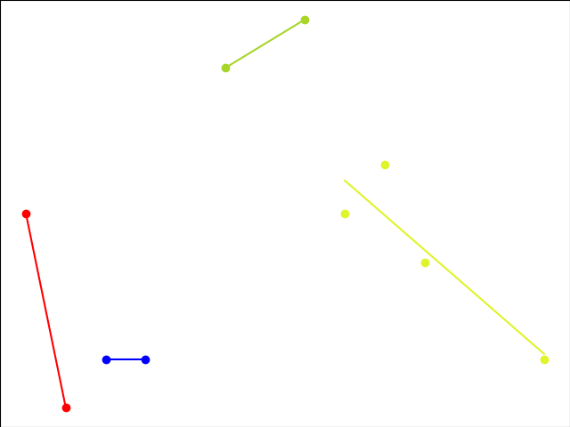
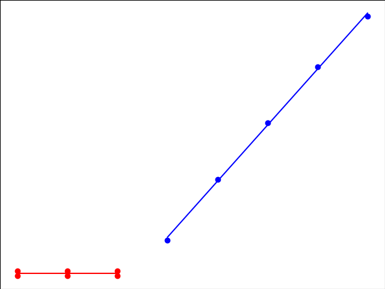

CS F364 Assignment 2
Table of Contents
1. Ford-Fulkerson Algorithm
1.1. Description
1.1.1. Problem statement
The problem is to find the maximum flow of a flow network. It can be shown that this is equal to the minimum of the capacities of all possible  cuts.
cuts.
1.1.2. Algorithm
First, we set the flow of each edge to zero. Then we look for an augmenting path from  to
to  . An augmenting path is a simple path in the residual graph, i.e. along the edges whose residual capacity is positive. If such a path is found, then we can increase the flow along these edges. We keep on searching for augmenting paths and increasing the flow. Once an augmenting path doesn't exist anymore, the flow is maximal.
. An augmenting path is a simple path in the residual graph, i.e. along the edges whose residual capacity is positive. If such a path is found, then we can increase the flow along these edges. We keep on searching for augmenting paths and increasing the flow. Once an augmenting path doesn't exist anymore, the flow is maximal.
2. Segmented Least Squares
2.1. Description
2.1.1. Problem statement
Given a set P of n points in the plane, denoted  ; and suppose
; and suppose  .
.
Given a line  defined by the equation
defined by the equation  , we say that the error wrt
, we say that the error wrt  is sum of the its squared distances to the points in
is sum of the its squared distances to the points in
A single line with the best fit for the points can be found using the well-known formula for linear regression. In the real world, a single line may not fit the dataset optimally, it may be a collection of line segments. Of course, if we have  points then this collection has zero error. But this will overfit the data. Hence, we want to find a balance between minimizing error and minimizing the number of line segments. Formally, we want to minimize
points then this collection has zero error. But this will overfit the data. Hence, we want to find a balance between minimizing error and minimizing the number of line segments. Formally, we want to minimize  where
where  is a given parameter called the penalty per line.
is a given parameter called the penalty per line.
2.1.2. Algorithm
We used a dynamic programming approach with the following recurrence relation:
![\[\mathrm{OPT}(j) = \min_{1\le i \le j}{e_{i,j}+c+\mathrm{OPT}(i-1)}\]](/home/chinmay/.local/state/emacs/var/org/persist/cd/f27ccc-6ac6-453a-8899-bfe6b0c7a208-9ef94b0e5598a2198f57bde68fbf4bf6.svg)
where
 is the optimum solution for the first
is the optimum solution for the first  points
points is the starting point of the last line segment
is the starting point of the last line segment is the error for the last line segment
is the error for the last line segment is the error for the first
is the error for the first  points
points
2.1.3. Pseudocode
Segmented-Least-Squares(n)
Array M[0..n]
Set M[0] = 0
For all pairs i <= j # O(n^2)
Compute the least squares error for e(i, j) for the segment p_i,...,p_j # O(n)
Endfor
For j = 1, 2, ..., n
Use the recurrence relation to compute M[j] # O(n)
Endfor
Return M[n]
2.2. Issues in coding
The case where slope is infinity had to be handled separately as we were getting NaN/ SIGFPU otherwise.
2.3. Results
- Test case 1: 10 points, penalty per line = 3 - RSS = 13.6, no. of lines = 4

- Test case 2: 11 points, penalty per line = 200 - RSS = 402.7, no. of lines = 2

- Test case 3: 100 points, penalty per line = 94 - RSS = 4307.14, no. of lines = 44